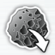
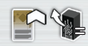
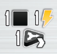

Entropy
Overview
We've trained our whole lives to be scientists who harness the power of entropy to craft solar systems from scratch to make and sustain life. We're doing our final exam in a simulation showing that we've got what it takes to science with the best of them.
Board overview
- Up top we've got stars that we'll be creating and evolving, as well as meteors that we'll crash into planets to add the building blocks for life
- In the center of the board we've got planets, biomes and life that we'll be working to support
- The bottom portion of the board are scoring opportunities and end game objectives
What is a solar system
Everyone starts with a solar system tile that has a starting star and starting planet on it
- A solar system can have at most 1 star, and at most 2 planets in it
- There's a stack of addiitonal solar system tiles, as you'll be able to (and should) construct multiple over the course of the game
The goal of creating these solar systems are to create conditions in which life can thrive
- Creating life is one of the ways to get points
- The gold bottom portion of the board has tiles that award points for people who get a certain number of oganisims in their solar systems
- We'll do this by playing lifeform cards onto a specific planet
- Life cards have tags in the top left that they need to have present in your solar system for them to be able to live there
- Tags can be met though a single planet and your star combined
- Cards also show the amount of that lifeform that will be placed on that planet in the form of tokens
Turn structure
A turn is made up of a few steps.
- Moving along outside of the board, and potentially gaining a bonus where you stop
- Taking an action
- Checking for any objectives you've met
Moving
There are six action areas along the outside of the board. In each area there is an outer section and an inner section
- The inner sections contain the 3 main actions of the game
- The outter sections contain more auxillary actions
On your turn, you must move between 1 and 3 sections clockwise
- When you move to a section, place your workder in either the outer or inner action space
- These are the white spaces in front without the chevrons
To move to an inner circle action space, you'll need to place a matching creation token from your console (player board). That is the black symbol.
- You have 3 creation tokens, one for each of the 3 main actions.
- To go to an inner cicle action space, you must place the creation token from your board matching the icon of the space.
- Your creation tokens stay on the board until you scientist travels all the way around and stops on, or passes it to pick it back up.
- If your token is already on the board, you won't be able to take that action until you pick it back up
- Passing over a creation token to put it back on your board gains you the bonus in the black diamond that your token is normally covering
- You put it on your board laying on its side
- You get your choice of an entropy (red triangle), which is a resource
- Or you get to activate on of your stars, which gives you the option to perform the conversion on it
- At the end of your turn you stand it back up, ready to use again
- This means you can't use a token you've picked back up that turn to take the corresponding main action
- Each of the main actions appears twice on the board's inner ring
- The creation tokens are only used for inner ring actions, not outer ring actions
- Each player also has a 4th creation token that starts the game on the board with the lock icon showing
- Passing this once just flips it over to the unlocked side
- You must pass it a second time to claim it
- Whenever you gain it, it returns to your board just like your regular tokens, earning you your choice of bonus and standing up at the end of the turn
- This token has a wild tag, and can now be used to take any of the 3 main actions that require a creation token
Traffic bonus
Before taking your action, check to see if you earned a traffic bonus
- These are the gray spaces with chevrons next to the action spaces
- Depending on how many spaces you moved to get here, you will get a different bonus. The fewer the spaces moved, the greater the bonus
- The one chevron means moving one space to get here, and so on
- Whenever you land on an action space that contains another player's scientist, add plus one to whatever traffic bonus you'd get
- So if you only move one space, but land somewhere with another player's scientist, resolve the traffic bonus as if you'd moved two spaces
- If you would move three spaces and end up sharing a space with another player, not only do you get no bonus, but you must pay 1 entropy to the supply
- Some outer tiles have a yellow triangle symbol on them.
- This means that they are considered to be linked with the inner action space
- Normally you could land in the same section as another player, but just pick the other action space and not be affected
- In linked sections it is treated the same as if you moved into the action space with them, and you suffer the traffic penalty.
After moving and gaining your traffic bonus, you will take the action of the space you landed on.
Major Actions (inner ring)
Evolve a Star action
This action lets you either evolve a star you already have in a solar system, or make a new star.
Upgrading a star
- There are 4 different tiers of star on the main board, connected by arrow lines
- All stars in a stack are identical
- Everyone starts the game with a tier one star, either 1a or 1b
- Different stars in the same tier will have different life condition symbols up top and different activation bonuses
- Which star you have also dictates the path it can be evolved along.
- You must follow the arrows when evolving, so 1b can't evolve into 2a, because they're not connected by arrows
- You can only upgrade to the next direct level
- Pay the cost in energy of the star you're upgrading to, and then physically replace the star you're upgrading with it and return the old one to the board. If it was a starting star return it to the box instead
Create a new star
- Spend one energy and take one of the red stars.
- You can add it to an existing solar system that doesn't have a star
- You can also make a new solar system with it by grabbing a solar system tile and putting the sun on it
No matter which option you choose, you do not activate the star
Agregate a planet
This is how you get planets in your solar systems
- Choose a visible planet tile and pay the mass shown on it to take it
- Activate the planets effect, then flip it over and place it in either
- An empty planet space in an existing solar system (each can only have 2 planets)
- A new solar system by also taking one of those tiles
Create life
This is how you play life cards from your hand onto planets.
- To play a card, you must meet its life conditions.
- The chosen planet, any asteroids on it, and the star all contribute their tags.
- Some cards may also show a different type of lifeform with a red number in the cost.
- That means you must already have the depicted lifeform on the chosen planet and remove the number shown as part of the cost of the played card.
- When playing a life card, you may discard one other life card from hand to reduce the requirements on the played card
- Choose one icon on the played card to ignore
- Add the indicated number of lifeform tokens to the planet tile
- Resolve the effect at the bottom of the card
- Flip the card over and put next to the planet tile
Each planet is limited to 3 life cards. Each planet can have a max of 5 lifeforms of each type.
The traffic bonus of this action adds additional lifeform tokens from the played card
Minor actions (outer ring)
Catch an asteroid

This is how you can add additional tags to planets
- Take an asteroid tile from the main board, paying 1 mass if you take a blue or purple asteroid
- There are two slots on each planet for an asteroid
- You pay a cost and cover the space with the asteroid
- So if you pay two mass, cover that space, if you pay 1 lifeform from that planet, cover that space
- This tag is now counted when checking for life conditions on this planet
- After placing an asteroid, you resolve the planet's effect
Upgrade console

How to upgrade your playerboard cards
- Each player has a unique set of 3 focus cards tucked in their playerboard
- These cards can get you a bonus whenever you place the corresponding creation token
- First, pay 3 energy to upgrade a card (shown on playerboard)
- Flip the card over so the gold background is showing
- Now whenever you place this creation token, you get the bonus shown in gold
- Then, if the corresponding creation token is on the board, retrieve it.
- Doing this does not activate the creation token return bonus of entropy/star activation
- Focus cards all have 3 tiers
- 0: Does nothing
- 1: Effect triggered whenever creation token is used
- 2: A powered up version of this effect
- Note that the wild creation token does not have a focus card, and using the wild token will never trigger any of your focus cards
Set a biome
How you create biomes on planets
- Take a tile from any of the 4 stacks and place it next to a planet of yours
- Each planet can only have 1 biome
- Biomes provide ongoing abilities that are triggered by specific action spaces
- Bottom left of the biome shows the action on the left, and the bonus you get when you take it on the right
- Right side of the tile shows how to upgrade the tile. When the condition is met, flip it over and your bonus gets better
Draw life cards
Take two life cards from any of the available stacks
Primordial soup

- Gain 1 mass and 1 energy
- Advance your generator marker (triangle shown, track is below asteroids)
- This track modifies the next action we'll talk about by giving you discounts
- There are spots on this track you'll gain points when you advance past them
Traffic bonus here allows you to advance lifeform tokens. Each advancement lets you
- Gain 1 bacteria
- Exchange 1 bacteria for a plant
- Exhange 1 plant for 1 animal
- Reminder, max of 5 of each type of token on a planet
Activate stars
- Choose any number of stars in your play area to activate
- Activate them each one time, paying the entropy on the left to gain the bonus on the right
- Going back to the generator track
- Your marker on this track gets you an entropy discount on a number of star activations
- You get a discount of X entropy (show at top) across Y star activations (shown on bottom)
- So first space on track gets you a discount of 1 entropy on 1 star activation
- Second space gets you a discount of 1 entropy on 2 different star activations
- Last space gets you a discount of 3 entropy on 4 different star activations
On a turn you can always trade 2 entropy for one energy or one mass
Mission and objective check
At the end of your turn, you'll always check for any missions or objectives that you fufill
Mission cards
- Each player starts the game with 2 mission cards in hand
- At the end of your turn, if you've met the condition up top, you may reveal it to get the bonus on the bottom
- You get to do this when you want, not forced to do it immediately as soon as you meet the condition
- Typically a multiplyer of resources for every time you've met a condition
- You will only be able to complete one mission card. As soon as you do, the other is discarded
Multiplyer Objectives
Bottom part of the board show 3 endgame objectives in different tracks, and lifeform conditions in the gold area
- Three separate tracks that look for when things happen
- When you do the condition, move up one on the track
- Lefmost is when you upgrade to a level 3/4 star
- Middle is when you catch an asteroid for the first time in a solar system
- Right is when you upgrade a biome
- At the end of the game, your progress on each of these objective tracks will give you points multiplied by the condition at the bottom
- leftmost is number of same type planets in your solar system
- Middle is each biome that contains at least 1 life card
- Right is different types of stars
- We can share spaces on these tracks, but the final space of each track can only hold 1 player's token
LIfeform objectives
The first person to have the indicated amount of tokens across all their solar systems takes the token and gains the points at the end of the game
- Multiple players can score the small tokens
- Only one player can score the large token
End of the game
End of the game is triggered whenever 2 medals are acheived
- Medals are present at the end of each endgame multiplyer track
- Medals are present under each big life scoring token
We'll finish out the round, then everyone gets one final turn
Scoring
- Points earned during game
- Points from lifeform objective tiles
- Points from main objective tracks
- Resource conversion of 4:1 for wood and life cards